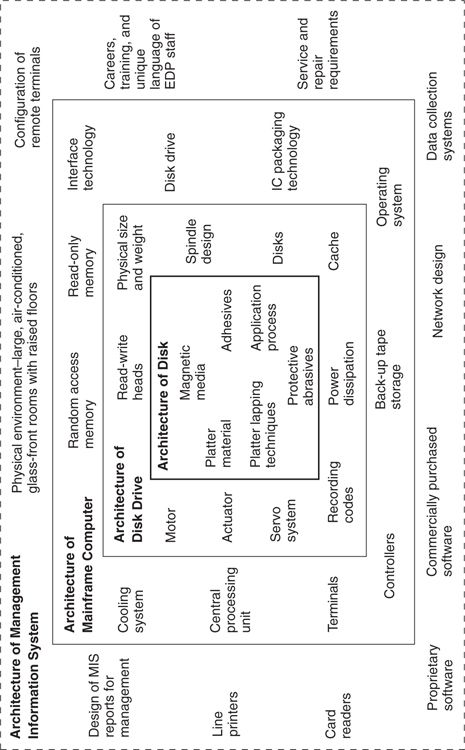

Companies are embedded in value networks because their products generally are embedded, or nested hierarchically, as components within other products and eventually within end systems of use. 8 Consider a 1980s-vintage management information system (MIS) for a large organization, as illustrated in Figure 2.1. The architecture of the MIS ties together various components—a mainframe computer; peripherals such as line printers and tape and disk drives; software; a large, air-conditioned room with cables running under a raised floor; and so on. At the next level, the mainframe computer is itself an architected system, comprising such components as a central processing unit, multi-chip packages and circuit boards, RAM circuits, terminals, controllers, and disk drives. Telescoping down still further, the disk drive is a system whose components include a motor, actuator, spindle, disks, heads, and controller. In turn, the disk itself can be analyzed as a system composed of an aluminum platter, magnetic material, adhesives, abrasives, lubricants, and coatings.
Although the goods and services constituting such a system of use may all be produced within a single, extensively integrated corporation such as AT&T or IBM, most are tradable, especially in more mature markets. This means that, while Figure 2.1 is drawn to describe the nested physical architecture of a product system, it also implies the existence of a nested network of producers and markets through which the components at each level are made and sold to integrators at the next higher level in the system. Firms that design and assemble disk drives, for example, such as Quantum and Maxtor, procure read-write heads from firms specializing in the manufacture of those heads, and they buy disks from other firms and spin motors, actuator motors, and integrated circuitry from still others. At the next higher level, firms that design and assemble computers may buy their integrated circuits, terminals, disk drives, IC packaging, and power supplies from various firms that manufacture those particular products. This nested commercial system is a value network.
Figure 2.1 A Nested, or Telescoping, System of Product Architectures

Source: Reprinted from Research Policy 24, Clayton M. Christensen and Richard S. Rosenbloom, “Explaining the Attacker’s Advantage: Technological Paradigms, Organizational Dynamics, and the Value Network,” 233–257, 1995 with kind permission of Elsevier Science–NL, Sara Burgerhartstraat 25, 1055 KV Amsterdam, The Netherlands.
Figure 2.2 illustrates three value networks for computing applications: Reading top to bottom they are the value network for a corporate MIS system-of-use, for portable personal computing products, and for computer-automated design (CAD). Drawn only to convey the concept of how networks are bounded and may differ from each other, these depictions are not meant to represent complete structures.